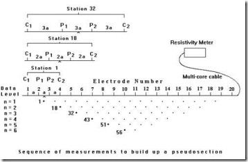
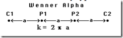
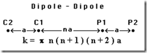
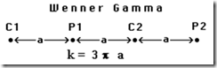
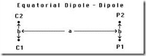
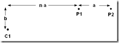
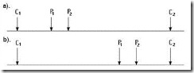
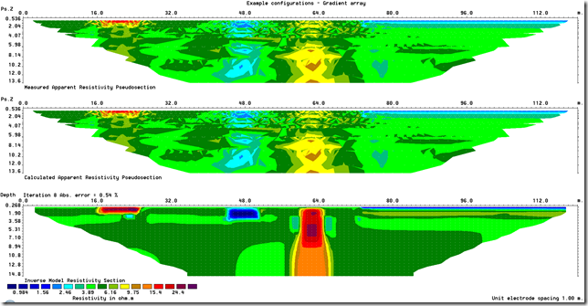
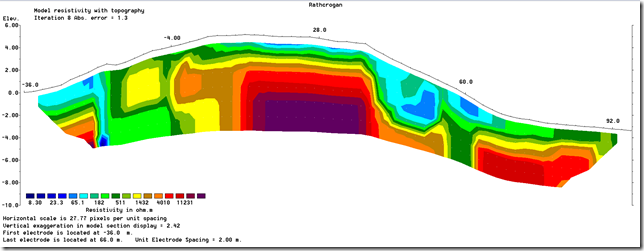

Example of electrodes arrangement and measurement sequence that can be used for a 2-D electrical imaging survey is shown on the left. Many different multi-electrode systems have been developed over the past 15 years using different arrangements of the cables and measurement strategies (Loke, 2011). This program is designed to invert large data sets (with about 200 to 100000 data points) collected with a system with a large number of electrodes (about 25 to 16000 electrodes). The survey is usually carried out with a system where the electrodes are arranged along a line with a constant spacing between adjacent electrodes. However, the program can also handle data sets with a non-uniform electrode spacing. RES2DINV program can be used for surveys using the Wenner, pole-pole, dipole-dipole, pole-dipole, Wenner-Schlumberger, gradient and equatorial dipole-dipole (rectangular) arrays. In addition to these common arrays, the program even supports non-conventional arrays with an almost unlimited number of possible electrode configurations (Loke et al. 2010). You can process pseudo sections with up to 16000 electrode positions and 70000 data points at a single time on a computer with 4 gigabytes (GB) of RAM. Besides normal surveys carried out with the electrodes on the ground surface, the program also supports aquatic and cross-borehole surveys.
The apparent resistivity values (and IP) used by RES2DINV software are given in a text file with .DAT extension. You can use any general purpose text editor, such as the Windows Notepad program if you are creating the data file manually. The data are arranged in an ASCII delimited manner where a comma or blank space or LF/CR is used to separate different numerical data items. If there is a problem in running RES2DINV software, one possible cause is that the input data were arranged in a wrong format.
There are two main types of data format used by RES2DINV, an index based and a general array format. The older index based format is only used for conventional arrays such as the Wenner, Wenner-Schlumberger, pole-pole, pole-dipole and dipole-dipole arrays. The general array format can be used for any array, including gradient and non-conventional arrays of any configuration.
Information below is compiled from RES2DINV Manual and Loke’s Course Notes to facilitate data file preparation and usage in RES2DINV for beginners. Therefore, the Table and Figure numbering was kept constant with originals, which can be downloaded as full PDFs from the attachment to this blog post.
A description of the different arrays types is given in the free tutorial notes on electrical imaging (Loke, 2011). Table A.1 shows the arrangement of the electrodes, names and codes for some commonly used arrays. In general for an array with four electrodes, there are three possible arrangements for the electrodes. The Wenner array has three different variations (Figure A.1). The "normal" Wenner array is actually the Wenner alpha array. The Wenner beta array is a special case of the dipole-dipole array where the "n" factor is always 1. The RES2DINV program will automatically convert a Wenner beta array data file into a dipole-dipole array data set.
A list of the arrays supported by the RES2DINV program together with their number codes are given below.
Table A.1. Array types and their number codes
| Schema | Number of electrodes | Array name | Number code | Sample data file |
 | 4 | Wenner (Alpha) | 1 | LANDFILL.DAT |
| 2 | Pole-Pole | 2 | BLOCKPOL.DAT | |
 | 4 | Inline Dipole-Dipole | 3 | BLOCKDIP.DAT |
| 4 | Wenner (Beta) | 4 | LONG_IP.DAT | |
 | 4 | Wenner (Gamma) | 5 | |
| 3 | Pole-Dipole | 6 | PDIPREV.DAT | |
| 4 | Wenner-Schlumberger | 7 | PIPESCHL.DAT | |
 | 4 | Equatorial dipole-dipole | 8 | |
 | 3 | Offset pole-dipole (only used as sub-array number with data in the general array format) | 10 | |
| 2 to 4 | Non-conventional or general array | 11 | RATCMIX.DAT | |
| 2 to 4 | Cross-borehole survey (apparent resistivity values) | 12 | BOREHOLE.DAT | |
| 2 to 4 | Cross-borehole survey (resistance values) | 13 | ||
 | 4 | Gradient array (only used as sub-array number with data in the general array format) | 15 | CROMER02.DAT |
{kind=link}
{kind=link}
{kind=link}
{kind=link}
{kind=link}
{kind=link}
{kind=link}
{kind=link}
{kind=link}
{kind=link}
Standard Conventional Arrays (Wenner, Wenner-Schlumberger, Pole-Pole, Dipole-Dipole)
{kind=link}
{kind=link}
Any array with regular spacing, that can be described by only 3 parameters, is considered standard and data file uses “index based data format”. The index based data format use a maximum of three parameters to specify an array. The first parameter is the location of the first (leftmost) electrode or the mid-point of the array. The second parameter is the spacing between the P1 and P2 potential electrodes (the 'a' spacing). The third parameter (only applicable to the pole-dipole, dipole-dipole and Wenner-Schlumberger arrays) is the ratio of the distance of the current electrode from the nearest potential electrode to the P1-P2 spacing. The three parameters are illustrated in Figure 7.1 for the dipole-dipole array as an example.
Figure 7.1. Parameters that specify the location and length of an array in the index based data format.
Simple Standard Arrays (Wenner, pole-pole, equatorial dipole-dipole arrays)
For the Wenner, pole-pole and equatorial dipole-dipole arrays (see Figure A.1), it is always assumed that the 'n' factor is always equals to 1 and thus need not be listed in the data file. As an example of a data file without the 'n' factor, Table 7.1 shows the data format for the example file LANDFILL.DAT with comments about information in the data lines.
Table 7.1. Example Wenner array data file format.
{kind=link}
| LANDFILL.DAT file | Comments |
| LANDFILL SURVEY | Name of survey line |
| 3.0 | Unit electrode spacing |
| 1 | Array type, 1 for Wenner |
| 334 | Number of data points |
| 1 | Type of x-location for data points, 1 for mid-point |
| 0 | Flag for I.P. data, 0 for none (1 if present) |
| 4.50 3.0 84.9 | First data point. For each data point, list the x-location, |
| 7.50 3.0 62.8 | 'a' electrode spacing, apparent resistivity value |
| 10.50 3.0 49.2 | Third data point |
| 13.50 3.0 41.3 | Fourth data point |
| ... | Same format for other data points |
| ... | |
| 75.00 48.0 52.5 | Last data point |
| 0,0,0,0,0 | Ends with a few zeros. Flags for other options. |
Standard regular arrays with n-factor (Schlumberger, Wenner-Schlumberger, dipole-dipole and pole-dipole arrays)
The dipole-dipole, pole-dipole and Wenner-Schlumberger array data sets have a slightly different format since an extra parameter, the dipole separation factor 'n', is needed. Table 7.3 shows an example for the Wenner-Schlumberger array.
Table 7.3. Example Wenner-Schlumberger array data file.
{kind=link}
| PIPESCHL.DAT file | Comments |
| Underground pipe survey | Name of survey line |
| 1.0 | Unit electrode spacing |
| 7 | Array type, 7 for Wenner-Schlumberger |
| 173 | Number of data points |
| 1 | Type of x-location for data points, 1 for mid-point |
| 0 | Flag for I.P. data, 0 for none (1 if present) |
| 1.50 1.00 1 641.1633 | First data point. For each data point, list the x-location, |
| 2.50 1.00 1 408.0756 | 'a' electrode spacing, the 'n' factor and the |
| 3.50 1.00 1 770.0323 | apparent resistivity value |
| 4.50 1.00 1 675.3062 | Fourth data point |
| ... | |
| .. | Same format for other data points |
| .. | |
| 2.50 1.00 2 206.2745 | 31st data point, note 'n' value of 2 |
| ... | |
| 19.00 2.00 5 896.3058 | Last data point, note a=2.0 and n=5 |
| 0,0,0,0,0 | Ends with a few zeros. Flags for other options. |
Topography data for index based format data files
The topography data is entered immediately after the main section with the apparent resistivity values. The file GLADOE2.DAT is an example with topographical data. The bottom section of this file with a description of the format for topographical data is as follows.
Table 7.7. Example of index based data file with topography.
{kind=link}
| GLADOE2.DAT file | Comments |
| 237 2 39.207 | Last four data points |
| 203 2 14.546 | with x-location of the data point, electrode spacing |
| 227 2 31.793 | and measured apparent resistivity values |
| 233 2 30.285 | |
| 2 | Topography data flag. If no topography data, place 0 here. |
| 26 | Number of topography data points |
| -100 33 | Horizontal and vertical coordinates of 1st, |
| -40 34.5 | 2nd topography data point |
| -20 35.0 | This is followed by similar data for |
| 0 35.209 | the remaining topography data points |
| .. | |
| 300 33 | Last topography data point |
| 2 | The topography data point number with the first electrode |
| 0,0,0,0,0 | A few zeros to end the file |
Note that the topography data is placed immediately after the apparent resistivity data points. The first item is a flag to indicate whether the file contains topography data. If there is no topography data, its value is 0. Enter 1 or 2 if topographical data is present. In the case where the actual horizontal and vertical coordinates of topography data points along the survey line are given, enter 1. Even if the actual horizontal distances are given in the topography data section, you must still use the x-distance along the ground surface in the apparent resistivity data section. In most surveys the distances of the points along the ground surface, and not true horizontal distances, are actually measured with a tape or using a cable with takeouts at regular intervals. In this case, enter a value of 2 for the topography data flag. This is followed by the number of topographical data points.
It is not necessary to measure the elevation for each electrode. For example, the data in the GLADOE2.DAT file involves 161 electrodes but only the elevations at 26 points are given. The maximum number of topographical data points you can have is 1000. For each data point, the horizontal location and the elevation is entered into the data file. After the last topographical data point, the number of the topographical data point where the first electrode is located is given.
Non-Standard Arrays (Gradient, Mixed, any arrangement)
This feature is to cater for electrode arrangements that do not fall under the usual array types or electrode arrangements, or unusual ways of carrying out the surveys. There are probably an infinite number of possible electrode configurations that are limited only by the imagination of the user, but in most cases they are likely to be slight variations of the standard arrays.
{kind=link}
Figure 7.5. Some possible non-conventional arrays. (a) Non-symmetrical four-electrode Wenner-Schlumberger or gradient type of array. (b) Dipole-dipole array with dipoles of unequal size. (c) A possible but probably non-viable electrode configuration. (d) Highly non-symmetrical dipole-dipole array.
To accommodate the various possibilities, a “general array data format” where the positions of all the four electrodes are listed is used. The x-location as well as the elevation of all the electrodes used in a measurement must be given. The file MIXED.DAT is an example data file with such a format. This is actually a synthetic data set with a mixture of measurements using the Wenner-Schlumberger and dipole-dipole arrays. The initial part of this data file with comments about the format is given in Table 7.8.
Table 7.8. Example data file with general array format
| MIXED.DAT file | Comments |
| Mixed array | Name of survey line |
| 1.0 | Unit electrode spacing |
| 11 | Array type (11 for general array) |
| 0 | Array type, 0 non-specific |
| Type of measurement (0=app. resistivity,1=resistance) | Header When the programs reads in a file with resistance values, you have a choice of inverting the data set using apparent resistivity values, or directly use the resistance values. Using resistance values directly in the inversion has the advantage of allowing you to use readings where the apparent resistivity value does not exist, or is negative. After reading in a data file, the program will attempt to filter out suspicious readings with potentially high noise levels if the measurements are given as apparent resistivity values, or if you had chosen the option to use apparent resistivity values in the inversion. If you choose to carry out the inversion using resistance values, the readings are not filtered. |
| 0 | 0 to indicate apparent resistivity |
| 407 | Number of data points |
| 1 | Type of x-location, 0 for true horizontal distance Note that the topography data is placed immediately after the apparent resistivity data points. The first item is a flag to indicate whether the file contains topography data. If there is no topography data, its value is 0. Enter 1 or 2 if topographical data is present. In the case where the actual horizontal and vertical coordinates of topography data points along the survey line are given, enter 1. Even if the actual horizontal distances are given in the topography data section, you must still use the x-distance along the ground surface in the apparent resistivity data section. In most surveys the distances of the points along the ground surface, and not true horizontal distances, are actually measured with a tape or using a cable with takeouts at regular intervals. In this case, enter a value of 2 for the topography data flag. This is followed by the number of topographical data points. |
| 0 | Flag for I.P. data, 0 for none (1 if present) |
| 4 0.0 0.0 3.0 0.0 1.0 0.0 2.0 0.0 10.158 | Each line represent measurement for one electrode arrangement. There will be 10 columns for resistivity data with 4-electrode array (11 if IP data were also measured). |
| 4 1.0 0.0 4.0 0.0 2.0 0.0 3.0 0.0 10.168 | The format for each data point is :- column 1 -Number of electrodes used (4), –columns 2-9 - x- and z-location of C1, C2, P1, P2, electrodes, respectively, column 10 - Apparent resistivity or resistance value, column 11 – IP (if present) |
| 4 2.0 0.0 5.0 0.0 3.0 0.0 4.0 0.0 10.184 | note: z-locations have to be set to 0.00 for all electrodes if no topography is present. |
| .. | |
| .. | Same format for other data points |
| .. | |
| 4 27.0 0.0 26.0 0.00 33.0 0.0 34.0 0.0 6.765 | Last data point |
| 0,0,0,0,0 | Ends with a few zeros. |
The sub-array type indicator is used when the electrode configuration follows one of the conventional arrays, for example the Wenner-Schlumberger array. As an example, the file MIXEDWS.DAT has the data for a Wenner-Schlumberger array only but the information is arranged in a general array format. In this case the sub-array number is 7. The file RATHCMIX.DAT has the data for the Rathcrogan mound (Waddell and Barton 1995) for the Wenner array but in a general array format (thus it has sub-array number of 1). For these data sets, the apparent resistivity vales can be displayed in the form of a pseudo section. Table 7.9 lists the data format used for this data set. The file MIXED.DAT is a combined data set with measurements using the Wenner-Schlumberger and dipole-dipole array. In this case, there is no consistent array type, so the sub-array number is given as 0.
The general array with number code 11 is always given with a secondary sub-array number code. If the arrays are actually one of the conventional arrays, the number code for the conventional array is used as the sub-array number (for example if it is a dipole-dipole array the sub-array number is then 3). If it is not one of the conventional arrays, or if it is a mixture of different arrays (such as the dipole-dipole and gradient), the sub-array number is given as 0.
Gradient Array:
There is currently no standard method to plot the apparent resistivity data from surveys with gradient array. There are probably two types of surveys with the gradient array. The first and traditional type survey use very few different C1-C2 positions (usually only one with C1 and C2 located at the two ends of the line), but many different P1-P2 positions, see the Table A.1 above.
This was mainly used in mineral exploration surveys. The second and modern type, mainly used with multi-channel multi-electrode resistivity meter systems, uses many different C1-C2 positions (a multiple gradient array). To accommodate both possibilities, two types of data plotting options are available. As most surveys will likely to be carried out using the second type of survey with multiple C1-C2 positions, this is described in more detail. The papers by Dahlin and Zhou (2004, 2005) have some information about such surveys. On selecting the ‘Type of gradient array’ sub-option, the following dialog box is shown.
| GRADIENT.DAT | Example data set using the gradient array |
| CROMER02.DAT | Gradient array data set. |
The multiple gradient array is becoming popular with multi-channel systems (Dahlin and Zhou 2000). The data for the gradient array must be given in the general array format with a sub-array number of 15. A listing of the example GRADIENT.DAT file with comments about the format is given in Table 7.11.
Table 7.11. Example gradient array data file 
{kind=link}
| GRADIENT.DAT file | Comments |
| Gradient array | Name of survey line |
| 1.0 | Unit electrode spacing |
| 11 | Array type (11 for general array) |
| 15 | Sib-array type, 1 for Wenner |
| Type of measurement (0=app. resistivity,1=resistance) | Header |
| 0 | 0 to indicate resistance |
| 1792 | Number of data points |
| 1 | Type of x-location, 2 for surface distance |
| 0 | Flag for I.P. data, 0 for none |
| 4 0.0,0.0 9.0,0.0 1.0,0.0 2.0,0.0 5.0588 | First data point |
| 4 1.0,0.0 10.0,0.0 2.0,0.0 3.0,0.0 5.0724 | Second data point |
| .. | |
| .. | Same format for other data points |
| .. | |
| 4 46.0,0.0 118.0,0.0 78.0,0.0 86.0,0.0 4.2571 | Second last data point |
| 4 48.0,0.0 120.0,0.0 80.0,0.0 88.0,0.0 4.2258 | Last data point |
| 0,0,0,0,0 | Ends with a few zeros. |
Topography indicators in general array format:
Usually you input x- and z- values for each electrode as shown above. However, in some cases with long surveys and slight (but important) elevation variability that might not be practical. In some cases, it might be more convenient to enter the topography information in a separate list, much like for data in the index based format. One example with data in the general array format but with the topography in a separate list after the apparent resistivity data lines is given in the file RATCMIX_Sep_Topo.DAT. Part of the file is shown in Table 7.10. Note the addition of a header line “Topography in separate list” that indicates the topography information is in a separate list after the apparent resistivity data lines. Note also in the data lines, the elevation for each electrode is given as 0.00. The program will calculate the elevation for the electrodes from the topography information.
Table 7.10. Example general array data format file with topography in a separate section 
{kind=link}
| RATCMIX_Sep_Topo.DAT file | Comments |
| Rathcrogan | Name of survey line |
| 2.0 | Unit electrode spacing |
| 11 | Array type (11 for general array) |
| 1 | Sib-array type, 1 for Wenner |
| Type of measurement (0=app. resistivity,1=resistance) | Header |
| 0 | 1 to indicate apparent resistivity |
| 399 | Number of data points |
| 2 | Type of x-location, 2 for surface distance |
| 0 | Flag for I.P. data, 0 for none (1 if present) |
| 4 -36.0 0.0 -30.0 0.0 -34.0 0.0 -32.0 0.0 116.0 | First data point, note non-zero elevation after x-location of each electrode. |
| 4 -34.0 0.0 -28.0 0.0 -32.0 0.0 -30.0 0.0 118.0 | Second data point |
| .. | Same format for other data points |
| .. | |
| .. | |
| 4 58.0 0.0 94.0 0.0 70.0 0.0 82.0 0.0 1160.0 | Second last data point |
| 4 60.0 0.093 96.0 0.0 72.0 0.0 84.0 0.0 1680.0 | Last data point |
| Topography in separate list | Extra header required for general array |
| 2 | 2 to indicate surface distance |
| 67 | Number of topography data points |
| -36,0.044 | Horizontal and vertical coordinates of 1st, |
| -34,0.134 | 2nd topography data point |
| .. | This is followed by similar data for |
| .. | the remaining topography data points |
| 96,-3.34 | Last topography data point |
| 1 | The topography data point number with the first electrode |
| 0,0,0,0,0 | Ends with a few zeros. |
Resistivity inversion with RES2DINV
Now, you should feel confident preparing data input file for any 2D array for surface survey. Remember: modification of data files to use in RES2DINV should be done in Windows Notepad or other simple text editor capable of saving data with user-defined extension. RES2DINV reads data from files with .DAT extension!
You are ready to work with your file in RES2DINV and carry out inversion. Install DEMO version of RES2DINV software as described in previous post. The installation file is also attached to this post and after installation all the sample data files mentioned will be available in RES2DINV folder on your PC.
You can carry over all the steps described in this exercise including inversion of your resistivity data using DEMO version, but you will not be able to save inversion model or output apparent resistivity cross-section data to use in other programs (like GIS, etc.). You can always PrintScreen your inversion results pictures or save it as BMP to include in quick reports. Also DEMO RES2DINV / RES3DINV will not allow you to input topography data.
If you have a software key, all the restriction are lifted. You can always purchase a key from Landviser, LLC, just send email to info@landviser.com or call 609-412-0555.